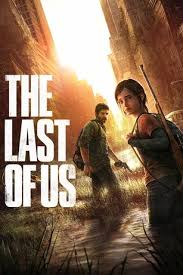

Titulos
Esta saga esta conformada por sus dos entregas las cuales a lo largo de estos años se han sacado remasteres, DLCs y hasta fue producida una serie en HBO MAX de la gran historia que tienen estos titulos.
-The Last of Us Part I (2013): Ganó más de 250 premios GOTY. Arrasó en los D.I.C.E. Awards (10 premios) y en los BAFTA.
-The Last of Us Part II (2020): Rompió récords históricos al convertirse en el juego más premiado de la historia en su momento (superado luego por Elden Ring). Acumuló más de 320 premios GOTY, incluyendo el de The Game Awards 2020.
-Ellie Williams
-Joel Miller
